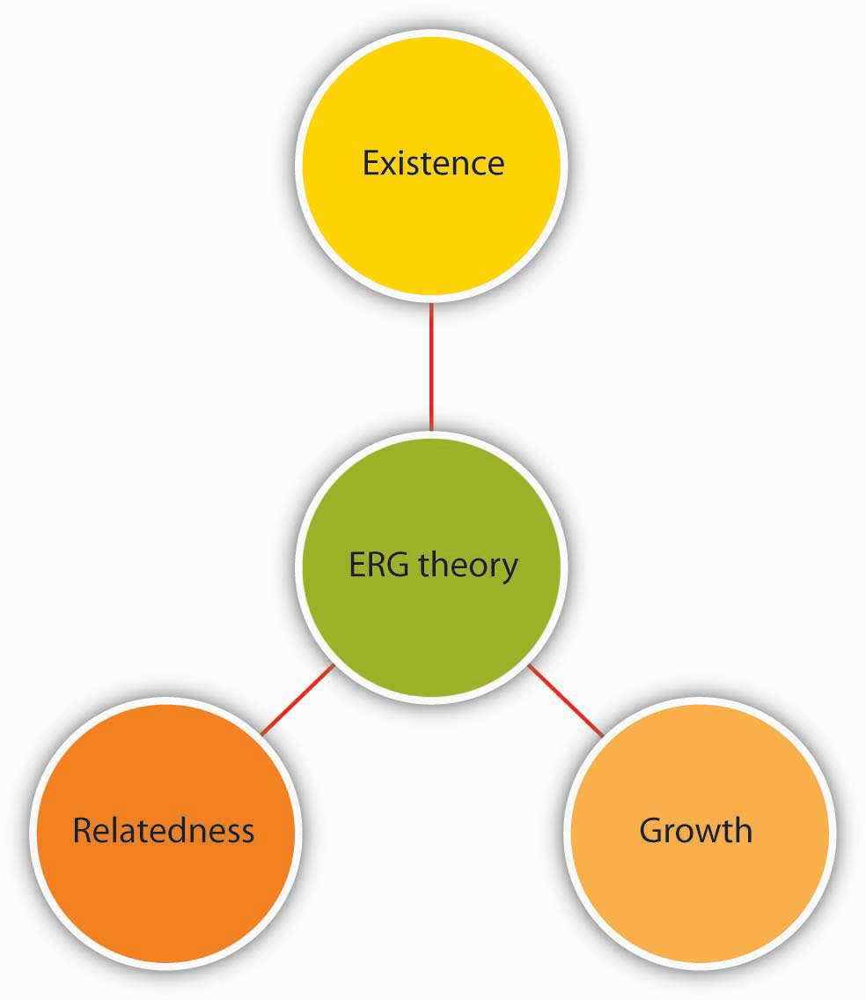

What is the main difference between Maslow's Need Hierarchy and Alderfer’s ERG theory?
The main difference between Maslow's Need Hierarchy Theory and Alderfer's ERG theory is Maslow’s Need Hierarchy Theory has 5 different levels of need whereas Alderfer’s ERG Theory has only 3 levels of need. In Maslow’s Need Hierarchy Theory individual will remain in the same level of needs until achieving satisfaction. In Alderfer’s ERG Theory if needs remain unsatisfied, the individual become frustrated and regress to lower level needs.

| Basis | Maslow’s Need Hierarchy Theory | Alderfer’s ERG Theory |
| Hierarchy of needs | Maslow’s Need Hierarchy Theory has 5 different levels of need. | Alderfer’s ERG Theory has only 3 levels of need. |
| Motivation Cause | In Maslow’s Need Hierarchy Theory at one point of time only one level of need can cause motivation. | In Alderfer’s ERG Theory more than one levels of needs can cause motivation at the same time. |
| Frustration element | In Maslow’s Need Hierarchy Theory individual will remain in the same level of needs until achieving satisfaction. | In Alderfer’s ERG Theory if needs remain unsatisfied, the individual become frustrated and regress to lower level needs. |
| Movement | Maslow’s saw people moving steady up the hierarchy of needs | Alderfer saw people moving up and down the hierarchy of needs from time to time and from situation to situation. |
| Universality of Order | Maslow’s Need Hierarchy asserts that the order of needs is universal. | Alderfer’s assert that the order of needs is different per individual. |
Difference Between Maslow’s Need Hierarchy Theory vs Alderfer's ERG Theory on the basis of Hierarchy of needs
Maslow’s Need Hierarchy Theory has 5 different levels of need whereas Alderfer’s ERG Theory has only 3 levels of need.
Difference Between Maslow’s Need Hierarchy Theory vs Alderfer's ERG Theory on the basis of Motivation Cause
In Maslow’s Need Hierarchy Theory at one point of time only one level of need can cause motivation whereas In Alderfer’s ERG Theory more than one levels of needs can cause motivation at the same time.
Difference Between Maslow’s Need Hierarchy Theory vs Alderfer's ERG Theory on the basis of Frustration element
In Maslow’s Need Hierarchy Theory individual will remain in the same level of needs until achieving satisfaction whereas In Alderfer’s ERG Theory if needs remain unsatisfied, the individual become frustrated and regress to lower level needs.
Difference Between Maslow's Need Hierarchy Theory vs Alderfer's ERG Theory on the basis of Movement
Maslow’s saw people moving steady up the hierarchy of needs whereas Alderfer saw people moving up and down the hierarchy of needs from time to time and from situation to situation.
Difference Between Maslow’s Need Hierarchy Theory vs Alderfer's ERG Theory on the basis of Universality of order
Maslow’s Need Hierarchy asserts that the order of needs is universal whereas Alderfer’s assert that the order of needs is different per individual.
Maslow's Need Hierarchy
It is simply known as need hierarchy theory. This theory was proposed by Abraham Maslow in his 1943 paper A Theory of Human Motivation. His theory suggests that people must satisfy five group of needs in order-physiological, security, social, esteem and self-actualization. The basis of Maslow's theory of motivation is that human beings are motivated by unsatisfied needs, and that certain lower needs need to be satisfied before higher needs can be addressed. These needs can be arranged in a hierarchy called 'Maslow's Needs Pyramid' or 'Maslow's Needs Triangle'. A person progresses step-by-step up this hierarchy.

Maslow’s Need Hierarchy Theory
Alderfer's ERG Theory
Clayton Alderfer proposed this theory. The letter E, R and G stand for existence, relatedness and growth. This theory collapse the need hierarchy developed by Maslow into three levels. Existence needs: They correspond to the physiological and security needs. They represent Maslow‘s fundamental needs. Relatedness needs: They focus on how people relate to their social environment. They represent needs for interpersonal relations. In Maslow's hierarchy, they would encompass both the need to belong and the need to earn esteem of others. Growth needs: They include needs for self-esteem, self-actualization, personal creativity or productive influence. They are the highest level needs in Alderfer's schema.
Alderfer's ERG Theory